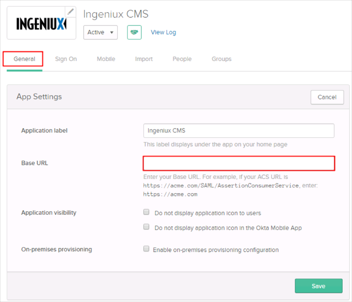
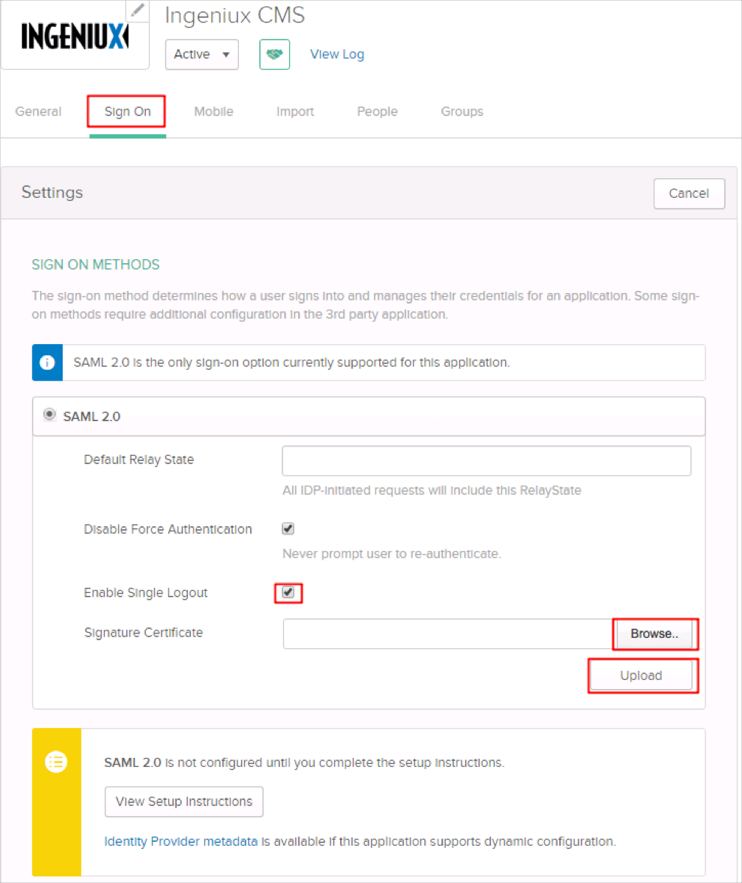

If you are not an on-premise customer, follow the steps below. If you are an on-premise customer, scroll down to those instructions later in this article.
Contact the Ingeniux Support team and request that they enable SAML 2.0 for your Ingeniux On Demand CMS site.
Include the following with your request:
IDP Metadata URL: Copy and paste the following URL:
Sign in to the Okta Admin app to have this variable generated for you
Certificate: Copy and paste the following certificate:
Sign into the Okta Admin Dashboard to generate this variable.
The Ingeniux Support team will process your request and will provide you with their URL in the following format:
https://your-cms-url
In Okta, select the General tab for the Ingeniux app, then click Edit.
Enter https://your-cms-url (the URL provided to you by Ingeniux) into the Base URL field.
Click Save.

Still in Okta, select the Sign On tab for the Ingeniux app, then click Edit.
Check the Enable Single Logout box.
Save the following x.509 Certificate, then click Browse to locate it and then upload it:
-----BEGIN CERTIFICATE----- MIIGezCCBWOgAwIBAgIQGGpdb2uGGBPi9/qC+0+yjTANBgkqhkiG9w0BAQsFADBC MQswCQYDVQQGEwJVUzEWMBQGA1UEChMNR2VvVHJ1c3QgSW5jLjEbMBkGA1UEAxMS UmFwaWRTU0wgU0hBMjU2IENBMB4XDTE2MTAyNTAwMDAwMFoXDTE5MTExOTIzNTk1 OVowITEfMB0GA1UEAwwWKi5pbmdlbml1eG9uZGVtYW5kLmNvbTCCASIwDQYJKoZI hvcNAQEBBQADggEPADCCAQoCggEBAMXNiL3mYBkBdjAb+VGOX6nWSy/HyhH7hFll zMP+X077Z+0M2P2UkIFNbh4GigmqBUeENXuEMTm5zC9qkolB2kke6dVqw/J9EWV0 AMvX0iYKQfDBRUIPs8cau0uVPTxhW+J5q7a/A5kxC8v93f5mPlsLikfRmCyj5aY3 STbWzoNW53nuJMXEDflyTP6jtED1zpm/1sgwnHxI39um6ZEdWsDdy1MMsVDu5nuP bCmyAZat+MMvG9Ra1EQEPwpFeHgMFokPgHZKs/qT4qWKlLBEEnd50lTQLZAb5Lgq bwOpEIosRJdMOp6DlrQUYbpHZydA5kt5mNBTeCvjDSTJOpXgH3UCAwEAAaOCA4ww ggOIMDcGA1UdEQQwMC6CFiouaW5nZW5pdXhvbmRlbWFuZC5jb22CFGluZ2VuaXV4 b25kZW1hbmQuY29tMAkGA1UdEwQCMAAwKwYDVR0fBCQwIjAgoB6gHIYaaHR0cDov L2dwLnN5bWNiLmNvbS9ncC5jcmwwbwYDVR0gBGgwZjBkBgZngQwBAgEwWjAqBggr BgEFBQcCARYeaHR0cHM6Ly93d3cucmFwaWRzc2wuY29tL2xlZ2FsMCwGCCsGAQUF BwICMCAMHmh0dHBzOi8vd3d3LnJhcGlkc3NsLmNvbS9sZWdhbDAfBgNVHSMEGDAW gBSXwidQnsLJ7AyIMsh8reKmAU/abzAOBgNVHQ8BAf8EBAMCBaAwHQYDVR0lBBYw FAYIKwYBBQUHAwEGCCsGAQUFBwMCMFcGCCsGAQUFBwEBBEswSTAfBggrBgEFBQcw AYYTaHR0cDovL2dwLnN5bWNkLmNvbTAmBggrBgEFBQcwAoYaaHR0cDovL2dwLnN5 bWNiLmNvbS9ncC5jcnQwggH5BgorBgEEAdZ5AgQCBIIB6QSCAeUB4wB3AN3rHSt6 DU+mIIuBrYFocH4ujp0B1VyIjT0RxM227L7MAAABV/zEzIIAAAQDAEgwRgIhAK2E 9Exc6zEheYVmdORtLhwG9AXBO7Veqok9B/DrWu6LAiEAwXq69E/buEacd4Iu1Le9 WFQexINhHQTdQcjsuBpox1UAdwBo9pj4H2SCvjqM7rkoHUz8cVFdZ5PURNEKZ6y7 T0/7xAAAAVf8xMylAAAEAwBIMEYCIQD+lNHtPBBCrjJIWTuIv08a/SXRbH7qgjLv RxKwYLcCFAIhAKJcMD93lL22t3FOHoF6F15RWGfyBwGq0r7b2EIxLOPXAHYA7ku9 t3XOYLrhQmkfq+GeZqMPfl+wctiDAMR7iXqo/csAAAFX/MTM2AAABAMARzBFAiBx js99murFgPBxBaaMbW+IkbI31YBQR2WaauQCiCYQtAIhAN+Cm/bjRiidna11n0Sc jpJGvZv3+x+Yaksh5UK0mjAKAHcAvHjh38X2PGhGSTNNoQ+hXwl5aSAJwIG08/aR fz7ZuKUAAAFX/MTNawAABAMASDBGAiEApLJxWRR9uBsOoebMng5KkN+/9dHSbgt1 u+pWMxCFYlgCIQDByopV8QWylGXWZxD0sthbdBl1NyQyR0yIJJd2xjOqjjANBgkq hkiG9w0BAQsFAAOCAQEAHw8/VBhvta4i77S8msVADL/Qu5Dcrs/O6emNmrEhszEu OCgPLBfm66ta2fIbCD+F5QUT5nGhZKxjhGfcndtGv3JNmBLNh1Nh+FbJp9pD+bB9 sUxBYkjJu/JxIQZuFgiqH5frD10NcWMsd8wTUuYj0Whdu2AlWOMrLhKdVHQLDKxX ipQFY/qJEObPG6Pvs4r+HyNGxCFISCSW7PQIYWJfBRNmf2/JY5OSnIC9S76fna6M BsOWdtbKaFlutFabm4uWQPIAhEgE842JCO3PgKDGGlXT8pyTBsD3cFoFv0oBy08A Nvl2hOkf03AR0Khq/My9qd+x2rtURR+vFckbI12vMg== -----END CERTIFICATE-----
Click Save.

Done!
The following instructions are for on-premise customers
Login to the CMS server and open the \site\saml.config file in a text editor.
Configure the values displayed in blue font with your site's values. Note that they are case sensitive.
<SAMLConfiguration xmlns="urn:componentspace:SAML:2.0:configuration">
<ServiceProvider Name= https://your-cms-url
Description="Ingeniux CMS"
AssertionConsumerServiceUrl="~/SAML/AssertionConsumerService"
LocalCertificateFile="filename-for-ssl-cert.pfx"
LocalCertificatePassword="YourSecurePassword" />
<PartnerIdentityProviders>
<PartnerIdentityProvider
Name="http://www.okta.com/exk17xt6x1tFwlxFy1d8"
Description="Okta"
SignAuthnRequest="true"
SignLogoutRequest="true"
WantSAMLResponseSigned="true"
WantAssertionSigned="false"
WantAssertionEncrypted="false"
DisableAudienceRestrictionCheck="true"
DigestMethod="http://www.w3.org/2001/04/xmlenc#sha256"
SignatureMethod="http://www.w3.org/2000/09/xmldsig#rsa-sha1"
SingleLogoutServiceBinding="urn:oasis:names:tc:SAML:2.0:bindings:HTTP-POST"
SingleSignOnServiceUrl="https://okta-coe-test.okta.com/app/ingeniuxcms/exk17xt6x1tFwlxFy1d8/sso/saml
SingleLogoutServiceUrl="https://okta-coe-test.okta.com
PartnerCertificateFile="https://okta-coe-test-admin.okta.com/admin/org/security/0oa17xt6x1uyQUEzS1d8/cert" />
</PartnerIdentityProviders>
</SAMLConfiguration>
Edit \site\local-membership.config and add in a new record for:
<add name="Okta" type="Ingeniux.CMS.Models.SAMLProvider" idpPartner="http://www.okta.com/exk17xt6x1tFwlxFy1d8" />
Save your changes, recycle CMS application pool, then attempt to login.
Done!
Notes:
SP-initiated flows, IDP-initiated flows, and Just In Time (JIT) Provisioning are all supported.
JIT is not the default setting – you need to enable it in your product.
Go to https://your-cms-url
Click Login.